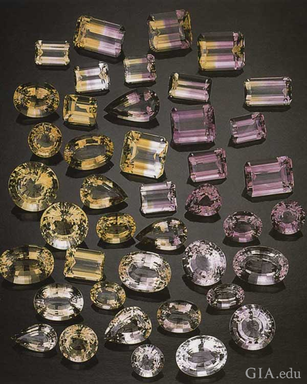

If you were born in February, you will have the purple variety of quartz called amethyst. It can be cut into many shapes and sizes and can also be manufactured in a lab. The royal families of Europe and Asia have collections of Amethyst, the February birthstone.
If your birthday is in February, wearing an amethyst can be a sign of personal empowerment.
The Greek word for a remedy against drunkenness is what inspired the name “amethyst”. Bacchus, the god of wine was associated with the gem because of its wine-like color.
The sixth wedding anniversary is when the Amethyst gem is given. It can be worn in celebration of your wedding or February’s birthstone. You will be in royal company.
Historically, since the days of Alexander the Great, royals have admired the deep purple hue of the February birthstone. The lore of the Amethyst states that it would convey strength and wit to those who wore it.
Russia was the main source of the mineral until large deposits were found in Brazil. It was suddenly in abundance. Africa and South America are the most important sources of amethyst today.
Amethyst is also found in the United States outside Phoenix, Arizona.
Amethyst is a 7 on the Mohs scale of hardness. It is appropriate for daily use in rings and other jewelry, but may show wear and need repolishing over time. If you place your jewelry next to the harder stones, it will be more likely to be scratched.
Amethyst birthstone jewelry can be cleaned with an ultrasonic cleaner. It is not recommended to steam clean birthstone jewelry. A soft brush is the safest option.
For many centuries, kings and queens have been enchanted by Amethyst.